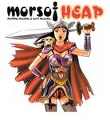

Home Artist links Label link

Morsof - Heap
| Artist: | Morsof |
| Title: | Heap |
| Label: | Poseidon Records PRF-006 |
| Length(s): | 43 minutes |
| Year(s) of release: | 2003 |
| Month of review: | [01/2004] |
Line up
Mikio Fukushima - saxes
Norivumi Uchida - bass
Morihide Sawada - drums
Yui Ando - guitar on 3,4
Miyako Kanazawa - piano, keys, voice on 1,2,3
Yoshiharu Izutsu - guitar on 2,5
Kenta Hamano - trombone on 4
Tracks
| 1) | Cos Theta | 1.50
|
| 2) | Underdog's Blues | 7.00
|
| 3) | Heap Suite | 13.34
|
| 4) | Afro Zone | 8.07
|
| 5) | Dada | 12.13
|
Summary
Morsof is short for Morning Machine & Soft Musume. Morning Musume is a Japan pop band, Soft Machine you probably know.
The music
I've written many a positive thing about Poseidon release, most often because their usual approach to jazz oriented music is fresh, and steers clear from endless meandering and formless works. This album very much goes against that rule. Guitar solos that seem to go on forever, neurotic bass and drums and honky horns. Heap Suite may have its moments, at least it's more experimental and less straightly honky at times. Afro Zone initially has sparkling guitar and almost military drum rolls, but drowns in sax sounds as it progresses. After several minutes of honking Dada comes up with a nice ECM-like section, only to lose itself in drivel after that.
Conclusion
Heap has some nice moments, but there are many minutes of endless drivel, seeming improvisations and the like. I can imagine that jazz aficionados see something in this album. From a progressive point of view, though, it's pretty far off.
© Roberto Lambooy